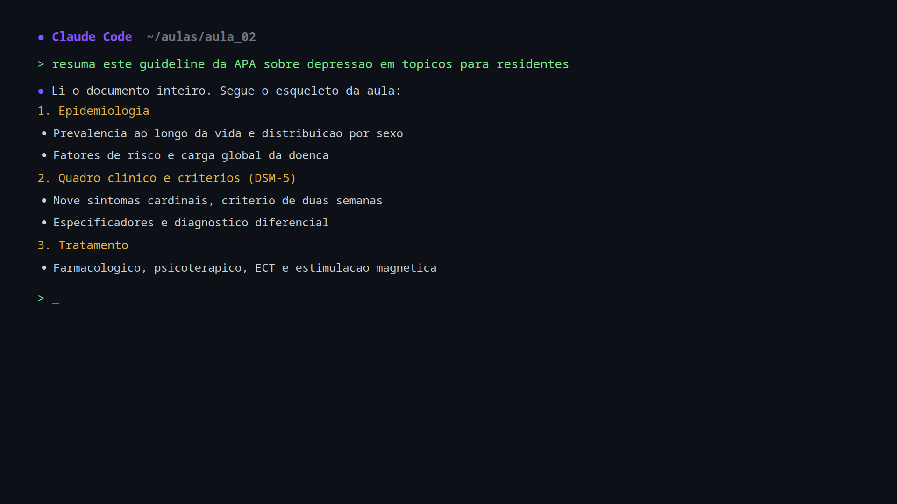

Direcao ANeon Fino
Moldura fina escura com uma linha roxa brilhante e glow suave; cantos arredondados; logo numa pilula branca no canto. Equilibrada e elegante.
- Visual limpo e moderno, sem roubar area do terminal.
- Glow discreto que "respira" nos momentos parados.
- Melhor escolha "coringa" se estiver em duvida.

Direcao BCorporativa EditorialRecomendada pelo CPO
Moldura sobria com uma "bancada" embaixo (estilo telejornal medico) que mostra o titulo da aula/secao no canto. O aluno sempre sabe onde esta, o que ajuda nos momentos de fala longa.
- Faixa de titulo de secao: resolve direto a dor do "momento parado cansativo".
- Ar institucional, formal, adequado ao publico medico.
- Titulo trocavel ao vivo (pela URL ?title=... ou pelo dock do OBS).
Direcao CMinimalista Cirurgica
Moldura quase invisivel; quatro cantos em "L" roxos, como o visor de um equipamento medico ou uma mira de camera. Maximo de tela para o conteudo.
- Aproveita quase toda a tela: otima para aulas 100% no terminal.
- Presenca de marca minima, estetica tecnica e sofisticada.
- Respiro subliminar: os cantos pulsam em sequencia, quase imperceptivel.